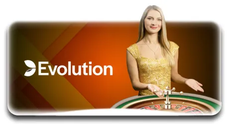

N8 Casino India – Your Ultimate Destination for Exciting Online Gaming
Welcome to N8 Casino, where the thrill never stops! Dive into a world of top-tier online gaming, featuring live casino action, thrilling slots, sports betting, and classic card games. Whether you're a seasoned player or just starting your journey, our platform offers fair play, exciting rewards, and a seamless gaming experience.
Start playing
N8 Casino – The Premier Online Gaming & Betting Platform
N8 Casino is a fully licensed online gaming platform that offers a wide range of entertainment, catering to players worldwide. As one of the leading platforms in the industry, N8casino provides users with a seamless and immersive experience through its diverse collection of casino games, live dealer options, sports betting, and more. Whether you are looking to play traditional table games, spin the reels on slots, or place a bet on your favorite sports, N8 Online Casino has something for everyone.
N8 Casino is designed to offer a user-friendly experience with a wide variety of games from top-tier providers. The platform integrates state-of-the-art technology to ensure smooth gameplay and quick transactions, making it accessible to both new and experienced players. With a focus on providing a fair and transparent environment, N8casino operates under strict licensing regulations to ensure that players' rights and security are always maintained
N8 Casino: Discover a World of Premium Online Games
N8 Casino stands out as a premier destination for online gaming enthusiasts, offering an impressive selection of both traditional casino games and cutting-edge live gaming experiences. From the thrill of the roulette wheel to the strategy of poker, N8Casino ensures a seamless and exciting gaming environment for players of all skill levels. Below, we take a closer look at some of the most popular games available on the platform, providing insights into each one and tips on how to get the most out of your gaming experience.
N8 Casino Card Games

Live Blackjack
Live Blackjack is a staple at Casino N8, offering players a real-time, immersive experience with live dealers. The game is played with one or more decks of cards, and the objective is to get a hand value as close to 21 as possible without going over. The live dealer adds an interactive element, creating an engaging atmosphere. N8’s Blackjack tables are perfect for players who enjoy strategy, skill, and the thrill of direct competition with a professional dealer
Baccarat
Baccarat is a sophisticated card game available at N8Casino, ideal for those who enjoy high-stakes gambling. Players can bet on either the "Player" or "Banker" hand, with the goal being to predict which hand will have the highest value, or if it will end in a tie. The simplicity of the rules combined with the chance for big wins makes Baccarat a favorite among seasoned casino players.
Poker
N8 Online Casino offers various types of poker games, including Texas Hold'em and Caribbean Stud. Poker is a game of skill, strategy, and psychology, with players needing to form the best possible hand while reading their opponents. The live poker tables at N8 allow for a competitive atmosphere, offering real-time interactions with other players and dealers. Whether you’re a seasoned pro or a beginner, poker at N8Casino can provide hours of entertainment.
Teen Patti
A traditional Indian card game, Teen Patti (also known as Indian Poker) has become hugely popular at Casino N8. Similar to poker but with simpler rules, the game involves betting on the best hand. Players are dealt three cards and must place their bets based on the strength of their hand, with the highest hand winning. The live format enhances the experience by allowing players to interact with dealers in real time.
Slot Games
.webp) PG
PG.webp) KA
KA.webp) MG
MG.webp) JJ FISHING
JJ FISHING.webp) T1 GAMES
T1 GAMES.webp) EVO
EVO
For players looking for fast-paced fun, N8 Casino selection of online slot games delivers. From classic three-reel slots to modern video slots with intricate storylines and bonus features, these games are easy to play but hard to put down. Popular themes include mythology, adventure, fantasy, and more. Slots offer both low-stakes fun and the potential for life-changing jackpots, making them a hit among casual players and high rollers alike.
Roulette

Roulette at N8 Casino is available in several exciting variations, including European, American, and French Roulette. Players place bets on where a ball will land on a spinning wheel. The variety of betting options—from inside bets on specific numbers to outside bets on colors or groups—offers something for every type of player. The excitement of watching the wheel spin live with real dealers makes it even more engaging.
Virtual Sports and eSports Betting
N8 Casino isn’t just about traditional casino games; it also offers virtual sports and eSports betting. Virtual sports simulate real-world sports like football, cricket, and horse racing, allowing players to place bets and experience the thrill of competition without waiting for actual events. Meanwhile, eSports betting has become a major draw, letting players bet on competitive video gaming events, including tournaments for games like Dota 2, League of Legends, and Counter-Strike.
N8 Casino India: Exciting Bonuses and Promotions
N8Casino India not only offers an exceptional gaming experience but also ensures that players have ample opportunities to boost their bankrolls through a variety of bonuses and promotions. Whether you're a new player eager to start your journey or a loyal member looking for more rewards, N8 Casino has something for everyone. Let’s take a closer look at some of the most exciting promotions that can make your gaming experience even more rewarding.
Here is their classification:
Welcome Bonus
When you sign up for N8 live casino, you're greeted with a generous Welcome Bonus. This bonus typically matches a percentage of your first deposit, providing you with extra funds to explore the casino games, slots, and more. It's a fantastic way to get started, offering you a risk-free way to try out the platform and increase your chances of winning. Make sure to check the terms and conditions to know the exact bonus percentage and maximum deposit match available.Referral Bonus
Casino N8 rewards its players for bringing in new members through the Referral Bonus program. By inviting friends to join the platform, you can earn a handsome reward when they sign up and make their first deposit. This is a win-win situation: your friends get a great platform for gaming, and you get a bonus for spreading the word. The Referral Bonus is an easy way to increase your casino funds while helping others discover the excitement of N8 Casino.Lucky Wheel Promotions
The Lucky Wheel at N8 Casino adds an extra layer of excitement to your gaming experience. As part of their ongoing promotions, N8Casino features a spinning wheel of fortune that players can spin to win free spins, cash bonuses, or other prizes. It's a fun way to get more out of your gameplay, with no extra effort needed. Just play and you might earn a spin, giving you a chance to win big!Weekly Reload Bonuses
For regular players, N 8 Casino offers Weekly Reload Bonuses, allowing you to recharge your balance every week. These bonuses usually come in the form of a deposit match, which helps you extend your playing time without dipping too much into your own funds. It’s an excellent way to keep the excitement going, ensuring you never run out of chances to hit the jackpot.Seasonal Promotions and Festivals
N8 Casino also rolls out Seasonal Promotions and Festival Offers in line with Indian holidays and global events. These special promotions often feature higher bonus percentages, free spins, and other exclusive rewards. Diwali, New Year, IPL, and other significant events in India are typically accompanied by limited-time offers that can make your celebrations even more thrilling. Always keep an eye on the promotions page to ensure you don’t miss out on these seasonal bonuses.Loyalty Rewards Program
N8 Online Casino appreciates the loyalty of its regular players, and its Loyalty Rewards Program ensures that players get exclusive bonuses for continued play. As you accumulate points, you can redeem them for cash rewards, free spins, and other bonuses. The more you play, the higher your loyalty status, unlocking even better rewards and promotions. It’s a great way to be rewarded for your time spent enjoying the games you love.Tournaments and Leaderboards
In addition to traditional bonuses, Casino N8 often hosts tournaments and features leaderboards for its players. Whether it’s a slot tournament or a live poker contest, players have the chance to compete for top spots and win huge prizes. These tournaments are designed to add a competitive thrill to your gaming experience while giving you the opportunity to win more than just the usual game payouts.
How to Register at N8 Casino and Start Playing
Registering at N8 Casino is a simple and straightforward process, designed to get you started with your gaming journey as quickly as possible. Whether you're new to online casinos or experienced in the world of gambling, this guide will walk you through each step of the registration process, ensuring you’re all set to enjoy the exciting world of N8 Casino.
Step by step:
Visit the N8 Casino Website
The first thing you’ll need to do is head to the N8 Casino homepage. You can also choose to download the N8 Casino app for easier access on your mobile device (available for both iOS and Android users).Click on the "Sign Up" Button
Once you’re on the homepage, look for the “Sign Up” button, typically located in the top-right corner of the screen. Click on this button to begin the registration process. If you’re using the mobile app, you’ll see a similar “Register” option.Fill in Your Personal Information
- Full Name: Ensure this matches your official identification.
- Email Address: Enter a valid email address that you have access to, as it will be used for account verification and communication.
- Phone Number: A mobile number may be required for account security and verification purposes.
- Date of Birth: N8 Casino has age restrictions, so you must be above the legal gambling age (18+ in most jurisdictions).
- Preferred Currency: Select the currency you wish to use for transactions (INR for players in India).
- Username: Choose a unique username that will identify you during gameplay.
Create a Strong Password
For security reasons, you’ll be asked to create a password. Make sure your password is both secure and memorable. A strong password generally includes a mix of uppercase and lowercase letters, numbers, and special characters. Casino N8 values your privacy and safety, so creating a unique password is essential to protecting your account.Make Your First Deposit
Head to the Cashier or Deposit section to fund your account. N8 Casino supports a wide range of payment methods, including credit/debit cards, e-wallets, and even cryptocurrencies like Bitcoin and Ethereum. Choose your preferred method and follow the instructions to make your first deposit.Start Playing!
After depositing, you can immediately dive into the action. Whether you enjoy slots, live casino games, sports betting, or virtual sports, N8Casino has something for everyone. Navigate through the site or app to choose your preferred game and start your exciting adventure!
Why Choose N8 Casino in 2025? The Future of Online Gaming
As the online casino industry continues to evolve, N8 Casino stands out as a top choice for players in 2025. With a commitment to providing a secure, enjoyable, and dynamic gaming experience, N8 Casino has proven to be a leader in the online gambling space. Whether you’re a seasoned gamer or a newbie, here are several reasons why you should consider N8 Casino as your go-to gaming destination in 2025.
State-of-the-Art User Experience
N8 Casino has invested heavily in cutting-edge technology to offer a seamless and user-friendly experience. Their website and mobile apps are optimized for fast loading times, intuitive navigation, and sleek designs. Whether you’re playing on a desktop, tablet, or smartphone, the gaming experience is smooth and enjoyable.Vast Selection of Games
In 2025, variety is key, and N8 live casino delivers on this front. From online slots to live dealer games, poker, blackjack, roulette, and even virtual sports, N8 Casino has an extensive range of games powered by some of the best software providers in the industry, including NetEnt, Microgaming, and Evolution Gaming.Generous Bonuses and Promotions
N8 Casino rewards both new and loyal players with attractive bonuses and promotions. In 2025, their offers continue to grow, with welcome bonuses, no-wagering promotions, free spins, and weekly reload offers.Secure and Fast Payments
N8 Casino values your security and convenience when it comes to deposits and withdrawals. Offering a variety of payment methods, including traditional credit/debit cards, e-wallets like PayPal and Skrill, and cryptocurrencies like Bitcoin, N8 Casino ensures fast and secure transactions.Dedicated Customer Support
In 2025, customer support remains an essential feature of any top-tier online casino, and Casino N8 goes above and beyond to provide exceptional service. Their 24/7 live chat feature ensures that players can get assistance whenever needed.Mobile Compatibility
As mobile gaming continues to dominate, N8 Casino remains ahead of the curve with a fully mobile-optimized site and app. Whether you have an Android or iOS device, you can enjoy the full range of casino games and features on your phone or tablet.Commitment to Responsible Gaming
N8 Casino is committed to responsible gaming. In 2025, they continue to prioritize player safety and well-being. The platform provides tools for setting deposit limits, self-exclusion, and links to professional organizations that can assist with gambling addiction.
How to Deposit Money into Your N8 Casino Account
Depositing money into your N8Casino account is a quick and straightforward process. To begin, simply log into your account on the N8 Casino website or app. Once logged in, navigate to the Deposit or Cashier section found in your account settings. From there, choose your preferred payment method, whether it’s a credit/debit card, e-wallet, or cryptocurrency. After selecting your method, enter the amount you wish to deposit and confirm the transaction details. Follow the prompts to complete the payment, and the funds will typically appear in your account instantly. Once your deposit is processed, you can start playing your favorite casino games without delay.
How to Withdraw Winnings from N8 Casino
Withdrawing your winnings from N8 Casino is a simple process, designed to be both secure and convenient. To begin, log into your account on the N 8 Casino website or mobile app. Once logged in, go to the Cashier or Withdrawal section, usually found in your account settings. From there, you can select your preferred withdrawal method. Options typically include bank transfers, e-wallets like PayPal and Skrill, or cryptocurrency withdrawals. Enter the amount you wish to withdraw and follow the instructions for your selected payment method. Depending on the method, withdrawals may take a few hours to a few days to process.Once the withdrawal is approved, your funds will be transferred to your chosen account, and you’ll be ready to enjoy your winnings!
Is N8 Casino Legit? Everything You Need to Know
If you’re considering playing at N8 Casino, you may be wondering about its legitimacy and whether it’s a safe platform to use. The good news is that N8 Online Casino is a legitimate and trustworthy online casino. The platform operates under strict regulations, ensuring it adheres to high standards of security, fairness, and player protection.
N8 Casino is licensed and regulated by reputable authorities, meaning it follows industry-standard protocols to provide a secure and fair gaming experience. The website employs advanced encryption technology to protect your personal and financial data, so you can feel confident that your information is safe while playing.
Additionally, Casino N8 partners with top-tier game developers such as NetEnt, Microgaming, and Evolution Gaming, all of which undergo regular audits to ensure fairness in their games. The casino also offers responsible gambling tools, such as deposit limits and self-exclusion options, which shows their commitment to protecting players.
N8 Casino is a reliable and reputable platform that provides a safe environment for online gaming, making it a solid choice for players looking for both fun and security.
Frequently asked questions
Is N8 Casino Safe to Play At?

Yes, N8Casino is completely safe and secure. The casino is licensed and regulated by reputable authorities, ensuring that it operates with the highest standards of security and fairness. It uses advanced encryption technology to protect your personal and financial information, so you can enjoy your gaming experience with peace of mind.
Is N8 Casino Safe to Play At?
Withdrawal times at N 8 Casino vary depending on the payment method used. E-wallets are typically the fastest, processing transactions within a few hours. Bank transfers may take a few business days, and cryptocurrency withdrawals usually take between 1-2 hours. Ensure that your account is fully verified to avoid any delays.
Can I Play at N8 Casino on My Mobile?
Yes, Casino N8 is fully optimized for mobile devices. You can access the casino via your smartphone or tablet through the mobile-friendly website or by downloading the N8 Casino app, available for both iOS and Android. All features, games, and payments are available on mobile, so you can enjoy gaming on the go.
What Should I Do if I Have a Problem with My Account?
If you encounter any issues with your account, such as login problems, payments, or technical issues, you can reach out to N8 Casino’s customer support team. The team is available 24/7 via live chat, email, or phone. They are friendly, professional, and ready to assist you with any concerns.
What Payment Methods Does N8 Casino Accept?
N8Casino supports a wide range of payment methods, including credit/debit cards (Visa, MasterCard), e-wallets (PayPal, Skrill, Neteller), bank transfers, and cryptocurrency options like Bitcoin and Ethereum. You can choose the payment method that best suits your needs for both deposits and withdrawals.
Are There Any Bonuses or Promotions at N8 Casino?
Yes, N8 live casino offers a variety of bonuses and promotions, including welcome bonuses, free spins, and loyalty rewards for regular players. Be sure to check the promotions page regularly for updated offers, and make sure to read the terms and conditions to fully understand any wagering requirements or eligibility criteria.